UT1: INTERNET, EVOLUCIÓN Y FUNDAMENTOS WEB ¶
FICHA TÉCNICA DE LA UNIDAD ¶
| Resultados de Aprendizaje (RA) | RA1: Instala gestores de contenidos, identificando sus aplicaciones y configurándolos según requerimientos. |
| Criterios de Evaluación (CE) | RA1: a, b, d, g |
| Tiempo | Total: 24 horas (Teoría: 4 h / Práctica: 20 h) |
¶
ÍNDICE DE CONTENIDOS ¶
1. INTRODUCCIÓN Y CONTEXTUALIZACIÓN
2.1. Definición de Internet e Infraestructura Física
2.2. El Lenguaje de la Red: La Pila de Protocolos TCP/IP
2.3. Clasificación de la Web por su Accesibilidad
2.4. Servicios Primordiales de Internet
3. FUNDAMENTOS, ARQUITECTURA Y SERVICIOS
3.1. Identificación en la Red: Direcciones IP y Nombres de Dominio
3.2. Proveedores de Internet (ISP) y Resolución DNS
3.3. El Servidor Web: HTTP/HTTPS, URLs, Virtual Hosts y Puertos
3.4. El Cliente Web: Navegador
5.1. Arquitectura de 3 Capas (Cliente-Servidor Dinámico)
5.2. Ciclo de Vida de una Petición Dinámica
6.2. Estructura Semántica Estricta y Cabecera de Página
6.3. Elementos del Bloque de Texto
6.4. Estructuración mediante Listas
6.5. Tablas
6.6. Gestión de Imágenes
6.7. Hipervínculos
6.8. Formularios
6.9. Comentarios dentro de Código
7.1. Introducción a CSS3 y Modos de Aplicación
7.2. Reglas, Selectores de Elemento, Clases e Identificadores
7.4. El Modelo de Caja (Box Model)
7.5. Frameworks CSS (Concepto, Layouts y Rejillas)
Importante: los apartados marcados con 📖, son de lectura obligatoria aunque no se expliquen durante las clases teóricas.
1. INTRODUCCIÓN Y CONTEXTUALIZACIÓN 📖 ¶
En el entorno informático actual, un Técnico en Sistemas Microinformáticos y Redes (SMR) no limita su actividad a reparar equipos en local o tirar cableado de red. Gran parte de los servicios corporativos críticos (ERPs, bases de datos de clientes, intranets, tiendas online) se han trasladado a infraestructuras web locales o a la nube.
Esta unidad proporciona al alumnado las bases teóricas de redes y el dominio inicial del código del lado del cliente (HTML5 y CSS3). Estas destrezas son fundamentales para comprender cómo viaja la información por la red, facilitando que el técnico diagnostique con éxito caídas de servicio, configure servidores web o despliegue aplicaciones de escritorio virtual y gestores de contenido (CMS).
2. CONCEPTOS FUNDAMENTALES ¶
2.1. Definición de Internet e Infraestructura Física ¶
Internet se define como una infraestructura global de redes y equipos informáticos enlazados entre sí, con el objetivo primordial de transferir datos y compartir recursos de forma descentralizada.
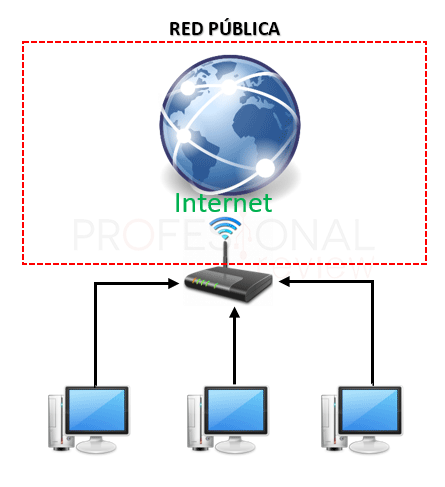
📖 La interconexión física de estos millones de equipos distribuidos por el planeta se realiza mediante múltiples tecnologías de transmisión:
Enlaces inalámbricos/inalámbricos de larga distancia: Conexiones satelitales, ondas de radio y microondas.
Cableado estructurado y terrestre: Par trenzado de cobre en redes locales y el despliegue masivo de redes de Fibra Óptica terrestre.
Infraestructura submarina: Cables de fibra de alta capacidad que cruzan océanos para conectar continentes enteros.
Infraestructura telefónica convencional: Sistemas xDSL que aprovechan el antiguo bucle de abonado.
2.2. El Lenguaje de la Red: La Pila de Protocolos TCP/IP ¶
Para que ordenadores con distintos componentes de hardware y sistemas operativos (Windows, GNU/Linux, macOS, Android) puedan entenderse entre sí, es indispensable utilizar un "lenguaje estándar" común: la pila de protocolos TCP/IP (Transmission Control Protocol / Internet Protocol).
Protocolo IP (Internet Protocol): Se encarga del direccionamiento y del envío de paquetes de datos a través de la red, asegurando que cada paquete llegue a su destino pero sin garantizar el orden de llegada ni la pérdida de información en el trayecto.
Protocolo TCP (Transmission Control Protocol): Trabaja en una capa superior y se encarga de trocear los datos en paquetes, numerarlos en el origen, comprobar que no se pierdan en el camino y reordenarlos correctamente al llegar al destino. Si falta un paquete, solicita automáticamente su retransmisión.
Origen histórico 📖: Los inicios de esta tecnología se remontan a 1972, cuando fue implementado por primera vez en la red ARPANET bajo el auspicio del Departamento de Defensa de los Estados Unidos. Posteriormente, se convirtió en el cimiento del Internet comercial que conocemos hoy.
2.3. Clasificación de la Web por su Accesibilidad 📖 ¶
No todo el contenido de Internet es accesible de la misma manera. Podemos clasificar la información en tres grandes áreas de almacenamiento:
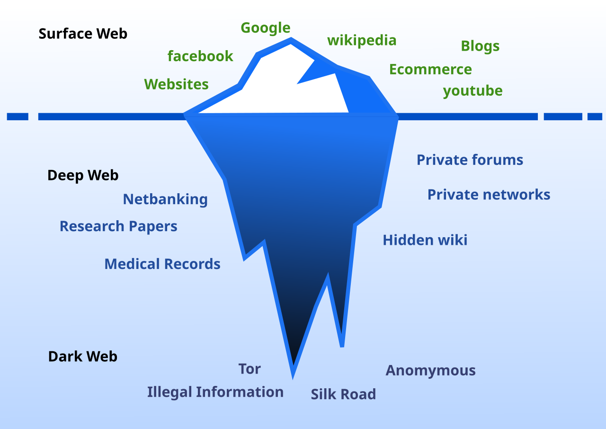
Surface Web (Web Superficial): Representa el contenido público que todos conocemos y visitamos a diario. Es indexado automáticamente por los motores de búsqueda convencionales (como Google o Bing).
Deep Web (Web Profunda): Almacena contenidos que no están indexados por los buscadores tradicionales. No contiene necesariamente material ilícito; de hecho, representa más del 90% de los datos en Internet. Incluye bases de datos privadas, historiales médicos protegidos, cuentas de correo personal, transacciones bancarias o repositorios académicos y científicos restringidos por contraseña.
Dark Web (Web Oscura): Es una porción pequeña de la Deep Web que ha sido ocultada intencionadamente. Sus páginas no son legibles por navegadores normales, requiriendo software específico de cifrado (como TOR) para acceder. Garantiza el anonimato absoluto de servidores y usuarios.
2.4. Servicios Primordiales de Internet ¶
Internet es la autopista de comunicación, pero sobre ella circulan diversos servicios especializados regulados por sus propios protocolos:
WWW (World Wide Web): Servicio que permite visualizar páginas y documentos hipertexto alojados en servidores web en todo el mundo, utilizando el protocolo HTTP/HTTPS y un software navegador.
Correo Electrónico (E-mail): Intercambio ágil de correspondencia digital y adjuntos. Utiliza protocolos como SMTP (envío de correos) y POP3 / IMAP (recepción y sincronización de mensajes).
Transferencia de Archivos (FTP): Servicio orientado al envío seguro y rápido de archivos grandes entre máquinas cliente y servidor mediante el protocolo FTP o su variante segura SFTP.
Terminal Remoto (Telnet / SSH): Permite el control, administración y mantenimiento de sistemas operativos de servidores remotos. Telnet envía la información en texto plano (inseguro); hoy en día ha sido sustituido por SSH (Secure Shell), que cifra toda la comunicación y comandos de consola.
Mensajería Instantánea e IRC (Internet Relay Chat): Canales de comunicación síncrona en tiempo real para texto plano, hoy integrados de forma transparente dentro de la interfaz del navegador.
Telefonía IP (VoIP): Servicio que transforma señales de voz analógicas en paquetes de datos digitales para realizar llamadas telefónicas por Internet (ej: Skype, Teams).
3. FUNDAMENTOS, ARQUITECTURA Y SERVICIOS ¶
3.1. Identificación en la Red: Direcciones IP y Nombres de Dominio ¶
Dirección IP: Es un código numérico exclusivo asignado a cada dispositivo (servidor, ordenador, impresora) conectado a una red, permitiendo identificarlo de forma unívoca.
Ejemplo IPv4: 192.168.1.45 (consta de 4 bytes o números de 0 a 255).
Nombres de Dominio: Puesto que recordar secuencias numéricas IP para cada servidor es difícil para los usuarios humanos, se diseñaron los nombres de dominio como equivalencias de texto fáciles de memorizar (ej: iescelia.org). Se clasifican según su terminación o TLD (Top-Level Domain):
Genéricos o internacionales (gTLD) 📖: Indican la naturaleza o finalidad del sitio.
.com (Comercial)
.org (Organizaciones sin ánimo de lucro)
.net (Proveedores de servicios de Internet e infraestructuras)
Geográficos o de país (ccTLD) 📖: Vinculados a territorios específicos gestionados por delegaciones nacionales.
.es (España)
.fr (Francia)
.uk (Reino Unido)
3.2. Proveedores de Internet (ISP) y Resolución DNS ¶
ISP (Internet Service Provider): Son las empresas (como Movistar, Orange o Vodafone) encargadas de suministrar el acceso físico a Internet del cliente y proporcionar direccionamiento lógico y conectividad.
Servidores DNS (Domain Name System): Sistema jerárquico que actúa como la "agenda de contactos" de Internet. Su misión es traducir nombres de dominio legibles por humanos (ej: google.com) a su correspondiente dirección IP lógica (ej: 142.250.200.78).
DNS Primario: Es el primer servidor al que el cliente realiza la consulta para resolver una URL.
DNS Secundario: Servidor de respaldo que entra en funcionamiento automáticamente si el primario no responde, garantizando la continuidad del servicio.
En entornos de redes locales e intranets, la configuración manual de estos servidores es una tarea clave para el técnico de sistemas.
3.3. El Servidor Web: HTTP/HTTPS, URLs, Virtual Hosts y Puertos ¶
Servidor Web: Es una aplicación que se ejecuta en una máquina servidor, escuchando peticiones en puertos específicos y sirviendo archivos web a los clientes mediante los protocolos:
HTTP (puerto estándar TCP 80): Envía la información en texto plano sin cifrar.
HTTPS (puerto estándar TCP 443): Variante cifrada mediante certificados SSL/TLS, garantizando que nadie pueda interceptar los datos entre cliente y servidor.
URL (Uniform Resource Locator): Ruta exclusiva que identifica a cada recurso en la red.
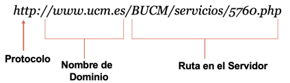
Concepto de Virtual Host 📖: Como técnicos de sistemas, debemos saber que un mismo servidor físico con una sola IP puede alojar múltiples sitios web distintos (ej: iescelia.org y departamento.local) mediante la configuración de Virtual Hosts en servidores como Apache o Nginx:
#
Configuración básica en Apache
(/etc/apache2/sites-available/iescelia.conf)
<VirtualHost *:80>
ServerName www.iesceliavinas.local
DocumentRoot /var/www/iescelia
ErrorLog ${APACHE_LOG_DIR}/iescelia_error.log
CustomLog ${APACHE_LOG_DIR}/iescelia_access.log combined
</VirtualHost> ¶
¶
3.4. El Cliente Web: Navegador ¶
El Navegador Web (Chrome, Firefox, Safari, Edge) es una aplicación cliente que solicita el código fuente (HTML, CSS, JS) de un recurso al servidor web, lo interpreta y lo dibuja en pantalla para el usuario de forma gráfica.
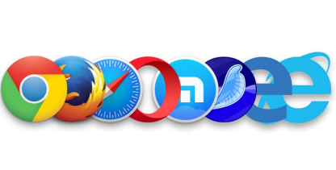
Motores de Renderizado 📖: El núcleo técnico del navegador que se encarga de procesar el código. Ejemplos de uso común: Blink (Chrome, Edge, Opera), Gecko (Firefox), WebKit (Safari)
Herramientas de Desarrollador (F12): Utilidad imprescindible para un técnico de SMR que permite auditar recursos de red, depurar fallos en la carga de scripts, modificar hojas de estilo CSS en tiempo real o analizar el código estructural procesado por el motor (DOM o Document Object Model).
3.5. Directrices de Calidad 📖 ¶
El técnico responsable de desplegar una aplicación web o un CMS debe velar por la calidad técnica del portal mediante las siguientes directrices básicas:
Dominio recordable: Seleccionar nombres de dominio cortos y sencillos.
Hosting Robusto: Alojar el sitio en servidores con baja latencia de red, evitando tiempos de inactividad que perjudiquen el negocio.
Arquitectura jerárquica: Organizar los archivos en el servidor siguiendo un árbol de directorios ordenado.
Compatibilidad y Adaptabilidad: Comprobar la visualización en diversos navegadores y asegurar que el diseño sea adaptable a dispositivos móviles (diseño Responsive).
Velocidad de Carga: Optimizar los pesos de las imágenes y la eficiencia del código para reducir el tráfico de datos.
Semántica y SEO: Usar de manera estructurada etiquetas semánticas (<h1>, <h2>) y etiquetas <meta> en la cabecera del documento para facilitar que los buscadores cataloguen el sitio.
4. EVOLUCIÓN DE LAS ETAPAS DE LA WEB 📖 ¶
La World Wide Web ha evolucionado rápidamente desde su creación a principios de la década de los 90.
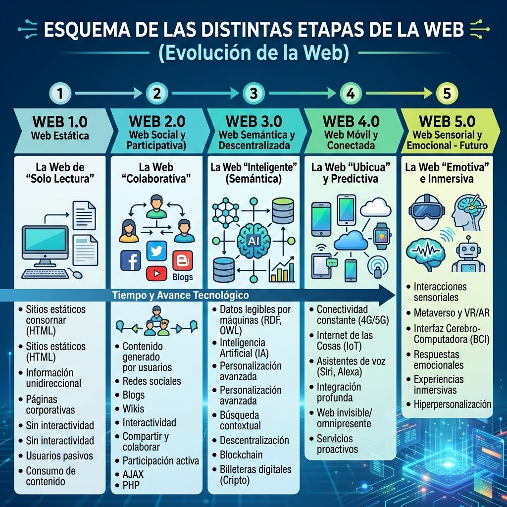
5. INTEGRACIÓN WEB Y BASES DE DATOS ¶
5.1. Arquitectura de 3 Capas (Cliente-Servidor Dinámico) ¶
A diferencia de la Web 1.0 (estática), la práctica totalidad de las aplicaciones corporativas modernas funcionan bajo un modelo de arquitectura distribuida en 3 capas:
Capa de Presentación (Frontend): Se ejecuta en el cliente (Navegador) a través de HTML5, CSS3 y JavaScript.
Capa de Negocio (Backend): Procesada en el Servidor Web (Apache, Nginx, IIS) mediante lenguajes interpretados como PHP, Python o C#.
Capa de Datos (Persistencia): Administrada por un Sistema Gestor de Bases de Datos (SGBD) como MariaDB, MySQL u Oracle.
5.2. Ciclo de Vida de una petición dinámica ¶
Cuando un usuario visita un gestor de contenidos o realiza una consulta, se inicia la siguiente secuencia técnica automatizada:
Petición: El navegador web envía una petición HTTP o HTTPS solicitando una página dinámica (ej: ver_usuarios.php).
Recepción: El servidor web (Apache) recibe la solicitud, detecta la extensión .php y pasa el control al motor o intérprete del lenguaje (Engine PHP).
Consulta de Datos: El código PHP procesa la lógica del script y abre una conexión al puerto del servidor de base de datos (MySQL), remitiendo una consulta SQL estructurada.
Procesamiento SQL: El SGBD (MySQL) ejecuta la consulta, recupera los datos de las tablas físicas del disco duro y devuelve los registros en bruto al motor PHP.
Renderizado HTML: El motor PHP recibe los datos, los inserta de forma transparente dentro de una estructura semántica HTML, dando por finalizada la ejecución del script.
Respuesta: El servidor web Apache envía el archivo HTML plano resultante de vuelta al navegador del usuario, que dibuja visualmente la información.
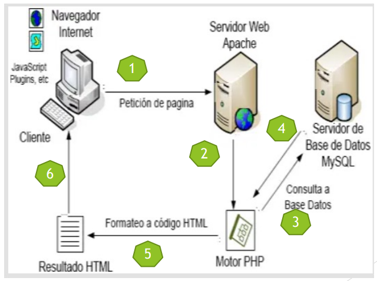
6. LENGUAJE DE MARCAS: HTML5 ¶
6.1. ¿Qué es HTML? ¶
HTML (HyperText Markup Language) es un lenguaje de marcado utilizado para estructurar y organizar jerárquicamente el contenido de un documento web mediante etiquetas o marcas encerradas entre caracteres menor y mayor que (< y >).
No es un lenguaje de programación, ya que carece de lógica condicional, bucles o funciones aritméticas; su única misión es indicar al navegador la función semántica de cada elemento del documento (un párrafo, un título, una celda, etc.).
6.2. Estructura Semántica Estricta y Cabecera de Página ¶
Las instrucciones en HTML se componen habitualmente de etiquetas de apertura (ej: <p>) y etiquetas de cierre (ej: </p>).
También existen etiquetas vacías, como <br>, <hr>, <img> o <meta>, que no encierran contenido.
Los atributos añaden información a la etiqueta. Se escriben en la etiqueta de apertura: nombre="valor".
<img src="foto.jpg" alt="Paisaje" width="300"
height="200">Para asegurar la compatibilidad con dispositivos móviles modernos, un documento HTML5 correcto debe tener la siguiente estructura semántica y de cabecera:
<!DOCTYPE html>
<html lang="es">
<head>
<!-- Declaración del juego de caracteres -->
<meta charset="UTF-8">
<!-- Configuración para la adaptabilidad móvil -->
<meta name="viewport" content="width=device-width,
initial-scale=1.0">
<!-- Metadatos de SEO para optimización en buscadores -->
<meta name="description" content="Apuntes de la asignatura
Aplicaciones Web para 2º de SMR">
<meta name="keywords" content="smr, aplicaciones web, informatica,
html, css">
<meta name="author" content="Departamento de Informatica IES Celia
Viñas">
<title>Fundamentos Web - SMR</title>
</head>
<body>
<!-- Estructura del cuerpo de la página -->
</body>
</html><!DOCTYPE html>: Indica al navegador moderno que procese el archivo bajo la última especificación estándar de HTML5.
<head> (Cabecera): Contiene información técnica de control que no es visible de forma directa en el monitor para los usuarios, pero resulta vital para el navegador y los motores de búsqueda.
<body> (Cuerpo): Alberga todo el contenido (texto, imágenes, tablas) que sí será renderizado visualmente por el cliente web.
HTML5 introdujo etiquetas específicas para identificar las diferentes regiones de una página, permitiendo que navegadores y buscadores comprendan la arquitectura de la información de forma precisa:
<header>: Define la cabecera de una página o de una sección, conteniendo habitualmente logotipos o introducciones.
<nav>: Contenedor destinado exclusivamente a bloques de enlaces de navegación principal.
<main>: Encapsula el contenido central y único del documento, excluyendo elementos repetitivos como barras laterales.
<section>: Representa una agrupación temática genérica de contenido, normalmente con su propio encabezado.
<article>: Define una unidad de contenido independiente y autocontenida (ej. una entrada de blog o noticia).
<aside>: Contenido tangencial o relacionado de forma indirecta con el texto principal, como barras laterales o publicidad.
<footer>: Pie de página o de sección que suele albergar información de autoría, contacto o avisos legales.
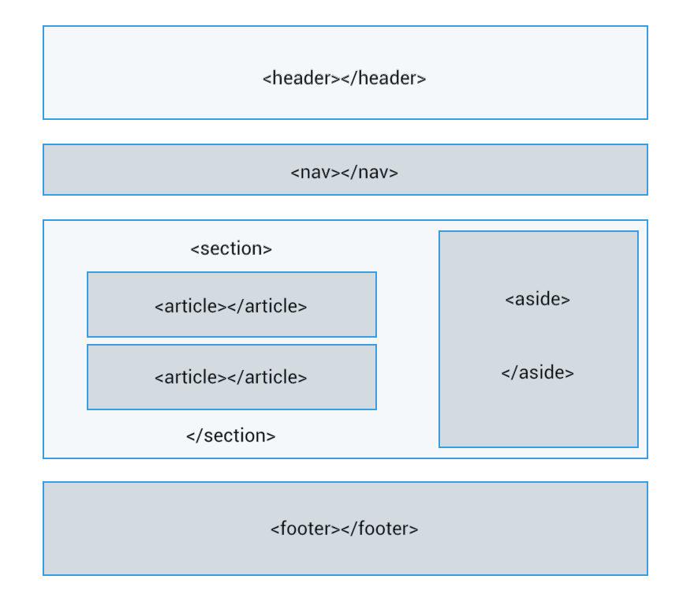
6.3. Elementos del Bloque de Texto ¶
A) Saltos de línea y Párrafos
En HTML, el navegador no tiene en cuenta la tecla Enter ni los espacios en blanco múltiples. Todo el texto corrido se dibuja en la misma línea.
Párrafo (<p> ... </p>): Agrupa un bloque de texto semántico y añade de forma automática un espacio vertical de separación con el siguiente bloque.
Salto de línea (<br>): Fuerza al texto a continuar de manera inmediata en la línea siguiente. No requiere etiqueta de cierre.
<p>SQL es el lenguaje estándar de bases de
datos.<br>
MySQL es un servidor de base de datos muy popular.</p>B) Títulos y Encabezados
HTML5 proporciona seis niveles jerárquicos de títulos para organizar la información de mayor a menor importancia:
<h1>Este es un Título de Nivel 1 (Mayor
importancia)</h1>
<h2>Este es un Título de Nivel 2 (Secciones
principales)</h2>
<h3>Este es un Título de Nivel 3 (Subsecciones)</h3>
<h4>Título de Nivel 4</h4>
<h5>Título de Nivel 5</h5>
<h6>Título de Nivel 6 (Menor importancia)</h6>C) Bloques de Sangría (<blockquote>) y Direcciones (<address>)
<blockquote>: Añade una sangría simétrica a la izquierda y derecha del párrafo, útil para citas textuales.
<address>: Etiqueta semántica que se suele situar al pie de página para indicar información de contacto de los autores o empresas.
<blockquote>
<p>La web es una herramienta fundamental para el acceso a la
información global.</p>
</blockquote>
<address>
Escrito por: Juan Simón Sánchez<br>
Email: <a
href="mailto:juansimonsanchez@gmail.com">juansimonsanchez@gmail.com</a><br>
IES Celia Viñas
</address>D) Énfasis de texto
Para destacar palabras o frases clave sin forzar un salto de línea:
<strong>: Indica máxima importancia semántica. Tradicionalmente los navegadores la renderizan en negrita.
<em>: Indica énfasis moderado. Tradicionalmente los navegadores la renderizan en cursiva.
<p>El protocolo <strong>HTTPS</strong> es la
variante segura de HTTP y viaja de forma
<em>cifrada</em>.</p>También conviene diferenciar entre formato visual y significado semántico: <strong> indica importancia y <em> énfasis.
<p><b>Negrita</b>, <i>cursiva</i> y
<u>subrayado</u>.</p><p>H<sub>2</sub>O y 2<sup>3</sup> =
8.</p>6.4. Estructuración mediante Listas ¶
HTML5 proporciona tres métodos nativos de organización en listas:
A) Listas No Ordenadas (<ul>)
Colección de elementos donde no importa el orden secuencial. Los elementos van precedidos de viñetas (puntos):
<ul>
<li>Inicio</li>
<li>Servicios</li>
<li>Contacto</li>
</ul>Especialmente útiles para tutoriales o instrucciones de instalación técnica paso a paso:
<ol>
<li>Instalar el servidor web Apache.</li>
<li>Configurar el Virtual Host.</li>
<li>Reiniciar el servicio web.</li>
</ol>Muy recomendadas para la elaboración de glosarios técnicos:
<dl>: Contenedor general de la lista (Definition List).
<dt>: El concepto o término a definir (Definition Term).
<dd>: La explicación o descripción de dicho término (Definition Description).
<dl>
<dt>Hosting</dt>
<dd>Servicio de alojamiento para páginas web y aplicaciones en
un servidor conectado a Internet.</dd>
</dl>D) Anidamiento de Listas
Podemos insertar una lista completa dentro de un elemento de otra lista para crear jerarquías multinivel:
<ol>
<li>Sistemas Operativos:
<ul>
<li>GNU/Linux</li>
<li>Windows Server</li>
</ul>
</li>
<li>Servicios de Red</li>
</ol>6.5. Tablas ¶
Las tablas sirven para mostrar datos relacionales organizados de forma clara en filas y columnas. Se estructuran mediante las siguientes marcas:
<table>: Contenedor principal de la tabla.
<tr>: Delimita el inicio de una fila (Table Row).
<th>: Define una celda de encabezado, centrada y en negrita (Table Header).
<td>: Define una celda de contenido estándar (Table Data).
<!-- Ejemplo de tabla semántica con estilos CSS básicos
integrados -->
<table border="1" style="border-collapse: collapse; width: 100%;
text-align: center;">
<thead>
<tr style="background-color: #f2f2f2;">
<th>Servicio</th>
<th>Puerto TCP</th>
<th>Función Principal</th>
</tr>
</thead>
<tbody>
<tr>
<td>HTTP</td>
<td>80</td>
<td>Transferencia de páginas web sin cifrar</td>
</tr>
<tr>
<td>HTTPS</td>
<td>443</td>
<td>Navegación segura con cifrado SSL/TLS</td>
</tr>
</tbody>
</table>6.6. Gestión de Imágenes ¶
Para realizar la inserción de recursos gráficos dentro de un portal web, el estándar HTML5 proporciona la etiqueta <img>.
Dicha marca debe vincularse obligatoriamente al atributo src, el cual define la ruta o URL donde se localiza el archivo binario de la imagen.
Asimismo, el atributo alt resulta indispensable para la accesibilidad, permitiendo mostrar una breve descripción textual en caso de que el motor de renderizado no logre cargar el recurso.
Técnicamente, se trata de una etiqueta vacía, por lo que carece de marca de cierre.
<img src="nombrefoto.jpg" alt="Descripción de la
fotografía">El control de las dimensiones espaciales se realiza mediante los atributos width (anchura) y height (altura), expresados habitualmente en píxeles.
Es posible añadir una delimitación visual utilizando el atributo border, que define el grosor de la línea perimetral del elemento.
La propiedad align permite gestionar la distribución horizontal del recurso, facilitando su alineación lateral o central respecto al flujo del documento.
<img src="nombrefoto.jpg" width="25" height="25" align="center"
border="2">Para regular la separación física entre la imagen y otros elementos circundantes, se emplean dos atributos específicos:
vspace: Establece el margen de separación vertical en píxeles.
hspace: Establece el margen de separación horizontal en píxeles.
<img src="imagen.gif" align="left" vspace="35"
hspace="35">La versatilidad de HTML permite combinar la inserción de recursos gráficos con la creación de enlaces de hipertexto.
Al anidar una etiqueta de imagen dentro de un contenedor de enlace, convertimos el recurso visual en un elemento clicable.
<a href="index.htm"><img
src="img/izda.gif"></a>El lenguaje permite personalizar el contorno de las imágenes mediante un grosor variable.
A través del atributo border se definen diferentes niveles de intensidad:
border="0" (Sin borde visible)
border="1" (Borde estándar)
border="10" (Borde de gran grosor)
6.7. Hipervínculos ¶
El componente fundamental de la Web es el hipervínculo, mecanismo que permite la navegación interconectada entre diferentes recursos y páginas.
Por defecto, el cliente web renderiza este elemento como texto subrayado; al interactuar con él, el navegador procesa la carga del destino especificado.
La sintaxis estructural para establecer enlaces externos o internos es la siguiente:
<a href="https://www.20minutos.es">Acceso a
Noticias</a>En este elemento introducimos la noción de atributo, el cual se integra en la marca de apertura mediante un par nombre-valor.
Es imperativo que el valor asignado al atributo se encuentre delimitado por comillas dobles para su correcta interpretación.
El atributo href del elemento "a" define la referencia del recurso que el navegador debe renderizar tras la activación del vínculo.
<body>
<a href="https://www.google.es/">Buscador
Google</a><br>
<a href="https://www.marca.com/">Diario
Deportivo</a><br>
<a href="https://www.zara.com/es/">Tienda
Online</a><br>
<a href="https://www.decathlon.es/es/">Artículos de
Deporte</a><br>
</body>Además de la navegación externa, es posible vincular diversos documentos HTML propios para construir una arquitectura de sitio coherente.
A modo de ejemplo técnico, consideremos la interconexión entre dos archivos denominados pagina1.html y pagina2.html.
Contenido estructural del archivo principal:
<html>
<head>
<title>Estructura de Navegación – Página 1</title>
</head>
<body>
<h1>Índice Principal.</h1> <a
href="pagina2.html">Sección de Noticias</a>
</body>
</html>El valor de referencia se establece inmediatamente después del operador de asignación.
En el escenario planteado, el destino apunta a un fichero local que debe coexistir en el mismo directorio del servidor para asegurar la resolución de la ruta.
En el documento secundario, se implementa el retorno mediante la instrucción: <a href="pagina1.html">Salir</a>.
El técnico puede configurar interfaces donde las imágenes actúen como activadores de navegación al ser seleccionadas por el usuario.
<h2>Interactúe con los logotipos para acceder a los motores de
búsqueda principales.</h2>
<a href="https://www.google.es/"><img src="../foto1.jpg"
alt="Enlace a Google"> </a>
<br>
<a href="https://www.amazon.es/"><img src="../foto2.jpg"
alt="Enlace a Amazon"> </a>Para gestionar la apertura de recursos en nuevas instancias del navegador, el elemento "a" dispone de la propiedad especializada target.
Asignando el valor "_blank", forzamos al sistema a desplegar el contenido en una pestaña independiente, preservando la sesión actual.
<a href="http://www.youtube.com" target="_blank">Plataforma de
Video</a>El proceso se basa en la inserción de marcadores técnicos en puntos estratégicos que servirán de destino para futuras peticiones.
A) Definición del Marcador
<a name="identificador">Texto de referencia</a><a href="#identificador">Desplazamiento al
marcador</a><a href="historia.html#identificador">Enlace a sección
externa</a><a href="#geografia">Ir a Sección Geográfica</a>
<!-- Contenido de la página --
>
<h2><a name="geografia">Sección:
Geografía</a></h2>En este contexto, la marca de encabezado se utiliza exclusivamente para dotar de jerarquía visual al contenido definido.
6.8. Formularios ¶
Un formulario web (<form>) es el mecanismo básico que permite recopilar información introducida por el usuario y enviarla a un servidor web o motor dinámico para su procesamiento.
<!-- Ejemplo de formulario básico de contacto -->
<form action="procesar_contacto.php" method="POST">
<fieldset>
<legend>Formulario de Soporte Técnico</legend>
<div>
<!-- Label explícita conectada con el id del input -->
<label for="txtUsuario">Nombre de Usuario:</label>
<input type="text" id="txtUsuario" name="usuario" placeholder="Ej:
Juan" required>
</div>
<div>
<label for="txtPass">Contraseña de Acceso:</label>
<input type="password" id="txtPass" name="contrasena"
required>
</div>
<div>
<label for="txtComentarios">Descripción de la
incidencia:</label><br>
<textarea id="txtComentarios" name="comentarios" rows="4"
cols="50"></textarea>
</div>
<div>
<input type="checkbox" id="chkAviso" name="privacidad"
required>
<label for="chkAviso">Acepto los términos del
servicio</label>
</div>
<div>
<input type="submit" value="Enviar Reporte">
<input type="reset" value="Limpiar Campos">
</div>
</fieldset>
</form>Tipos de Control comunes en un formulario: ¶
Cuadro de texto (type="text"): Entrada estándar para una sola línea.
Cuadro de contraseña (type="password"): Oculta los caracteres introducidos utilizando puntos o asteriscos.
Cuadro multilínea (<textarea>): Permite entradas de texto de varias líneas.
Casilla de verificación (type="checkbox"): Opciones independientes y no excluyentes.
Botón de radio (type="radio"): Opciones mutuamente excluyentes (se debe asociar el mismo atributo name para definir el grupo).
Lista Desplegable (<select>): Permite seleccionar una de varias opciones de una lista:
<select id="selSO" name="sistema_operativo">
<option value="win">Windows Server</option>
<option value="linux" selected>GNU/Linux
Debian</option>
</select>La etiqueta <!-- ... --> permite insertar notas explicativas dentro del código que serán totalmente ignoradas por el navegador web en pantalla, ayudando al técnico y programadores a organizar el código fuente.
7. CAPA DE DISEÑO Y MAQUETACIÓN: CSS3 ¶
7.1. Introducción a CSS3 y Modos de Aplicación ¶
CSS3 (Cascading Style Sheets) es el lenguaje que controla la presentación visual y estética del documento (colores, fuentes, márgenes, diseño y disposición espacial de elementos).
Existen cuatro métodos válidos para aplicar estilos a un sitio web, ordenados por su nivel de jerarquía y buenas prácticas:
Estilo en línea (Atributo style): Se aplica directamente en la propia etiqueta HTML. Útil solo para pruebas rápidas de laboratorio:
<p style="color: blue; font-size: 14px;">Este párrafo tiene
estilos inline.</p>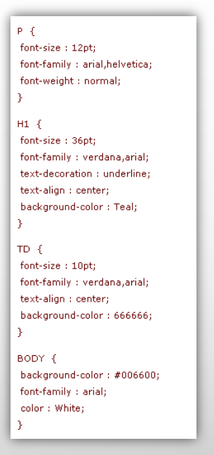
<head>
<style type="text/css">
p { color: darkblue; font-size: 16px; }
</style>
</head><head>
<link rel="stylesheet" type="text/css" href="estilos.css">
</head>Importación CSS (@import): Permite importar una hoja de estilos externa desde dentro de otra declaración CSS:
@import url("tipografias.css");7.2. Reglas, Selectores de Elemento, Clases e Identificadores ¶
Una regla CSS consta de la siguiente estructura sintáctica: selector {atributo: valor; …}
Selector de Elemento o Etiqueta: Aplica los estilos de forma global a todas las etiquetas del mismo tipo presentes en la web (ej: h1, p, table).
Selector de Clase (.nombre_clase): Reutilizable. Se aplica a múltiples elementos diferentes usando el atributo class="nombre_clase":
/* Definición del estilo en el archivo CSS */
.texto-alerta {
color: red;
font-weight: bold;
}
<!-- Aplicación del estilo en el documento HTML -->
<p class="texto-alerta">Atención: El servidor web requiere
actualización de seguridad.</p>#menu-principal {
background-color: #333333;
padding: 10px;
}<div> es un contenedor genérico en bloque. Inicia en una línea nueva y ocupa todo el ancho disponible, ideal para estructurar grandes bloques o secciones de la web.
<span> es un contenedor en línea. No altera el flujo de la línea ni genera saltos, idóneo para dar formato a palabras sueltas dentro de un párrafo.
<div style="background-color: lightgrey; padding: 20px;">
Este es un contenedor div que ocupa todo el ancho disponible.
<span>Y este es un elemento span dentro del div que solo ocupa
el espacio necesario.</span>
</div>7.3. Ejemplos de estilos
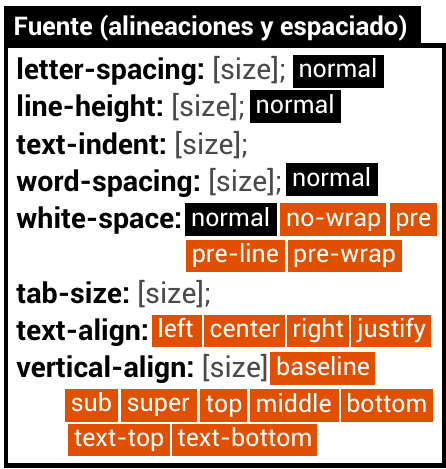
¶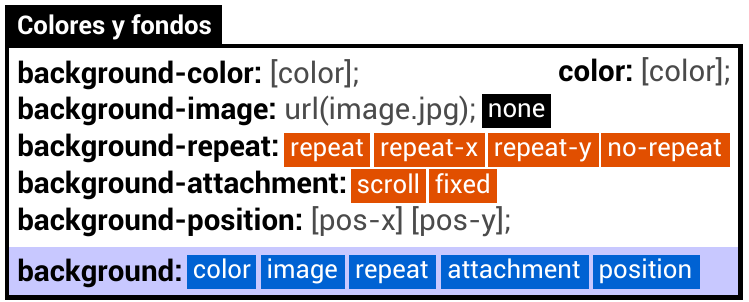
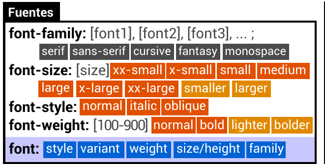
¶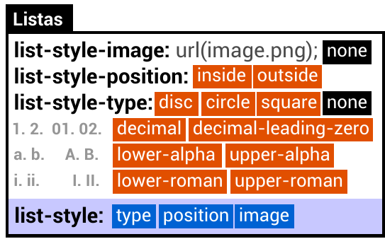
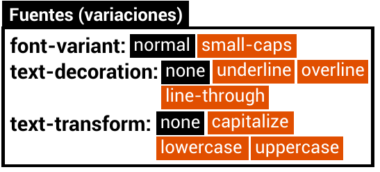
¶¶
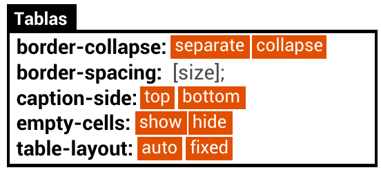
¶¶
¶
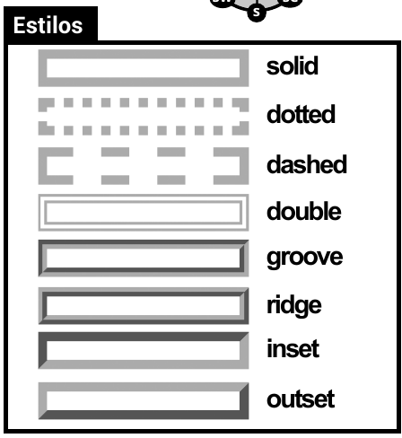
¶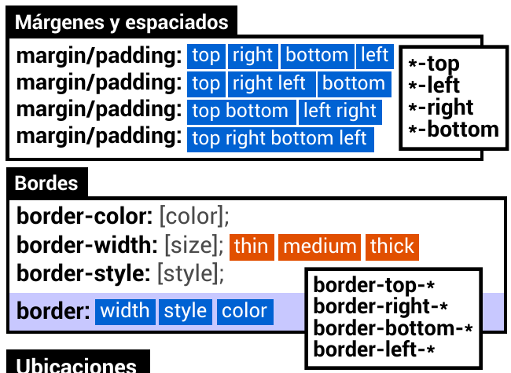
¶¶
¶
7.4. El Modelo de Caja (Box Model) ¶
Cada elemento HTML que dibuja el navegador en pantalla se representa conceptualmente como una caja rectangular compuesta por cuatro capas físicas:
Content (Contenido): Zona física interna donde se renderiza el texto, imágenes o elementos hijos (width y height).
Padding (Relleno): Espacio interno transparente que separa el contenido del borde del contenedor. Toma el color de fondo asignado.
Border (Borde): Línea límite que envuelve al elemento, configurable en grosor, estilo y color.
Margin (Margen): Espacio exterior totalmente transparente que separa la caja actual de las cajas colindantes en la web.
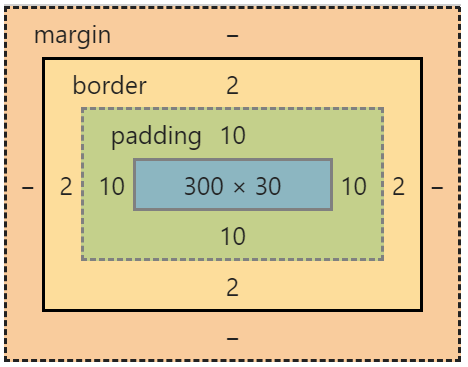
/* Ejemplo aplicado de un contenedor con el modelo de cajas */
.caja-noticia {
width: 300px;
padding: 15px;
border: 2px solid #1a4f8a;
margin: 20px;
box-sizing: border-box; /* Asegura que padding y borde no aumenten el
ancho total */
}position: relative: El elemento se desplaza tomando como referencia su posición original en el documento.
position: absolute: El elemento se ubica con precisión milimétrica (indicando coordenadas top, left, right, bottom) tomando como referencia el borde de su contenedor posicionado más cercano o la ventana del navegador.
z-index: Establece el orden de superposición vertical de capas (a mayor número, la caja se dibuja por encima de las capas con menor índice).
La sintaxis shorthand (abreviada) permite escribir en una sola línea múltiples subpropiedades, reduciendo la cantidad de líneas que el navegador debe descargar:
font: p { font: italic bold 14px/1.6 Arial, sans-serif; } (estilo, grosor, tamaño, interlineado y familia).background: body { background: #fafafa url('fondo.png') no-repeat fixed center; }margin / padding:margin: 10px; (los cuatro lados iguales).margin: 10px 20px; (superior/inferior, izquierda/derecha).margin: 10px 15px 20px 25px; (orden horario: arriba, derecha, abajo, izquierda).
border: h1 { border: 2px solid #1a4f8a; }
7.7. Frameworks CSS (Concepto, Layouts y Rejillas) 📖 ¶
Un Framework CSS (como Bootstrap o Tailwind) es un conjunto de archivos CSS predefinidos que aceleran las tareas de diseño e integración mediante:
Layouts (Rejillas): Dividen el lienzo en columnas para alinear elementos con total precisión espacial.
css-reset: Soluciona incompatibilidades de visualización entre navegadores.
Ventaja: Aceleración drástica de la maquetación web.
Desventaja: Incrementa el tamaño de descarga inicial del sitio web.